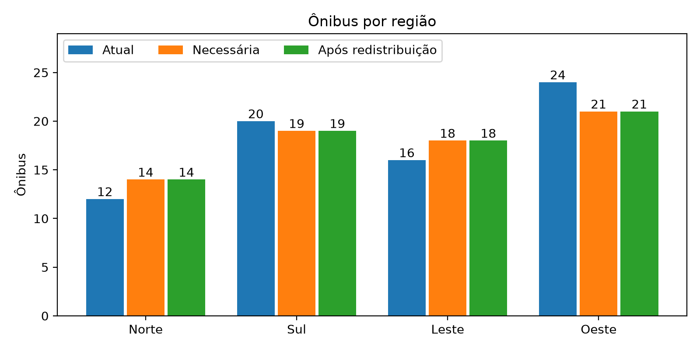
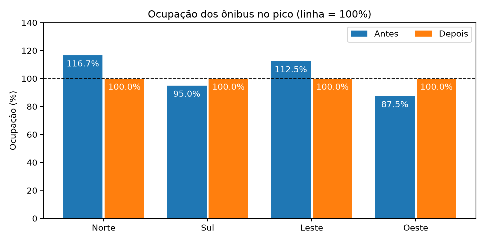

Recuperação da distribuição atual com sistemas lineares e proposta de redistribuição por meio de uma transformação linear, implementadas em Python
| Integrante | RM |
|---|---|
| André Santos de Azevedo | RM572236 |
| Guilherme Henrique de Almeida | RM568708 |
| Renan de Castro Albuquerque | RM570532 |
Arquivos entregues: modelagem_frota.py (código), requirements.txt (bibliotecas), pasta graficos/ e este relatório.
A empresa municipal de transporte perdeu os registros de quantos ônibus estavam em cada um dos quatro centros operacionais (Norte, Sul, Leste e Oeste), mas guardou quatro indicadores consolidados. Com eles montamos um sistema linear 4×4, mostramos que ele tem solução única e recuperamos a frota atual. Em seguida comparamos essa frota com a demanda do horário de pico e propusemos uma redistribuição, escrita como uma transformação linear T(x) = M·x.
Usamos uma variável para cada centro operacional, representando a quantidade de ônibus alocados nele:
| Variável | Significado | Domínio |
|---|---|---|
| N | ônibus na região Norte | inteiro, N ≥ 0 |
| S | ônibus na região Sul | inteiro, S ≥ 0 |
| L | ônibus na região Leste | inteiro, L ≥ 0 |
| O | ônibus na região Oeste | inteiro, O ≥ 0 |
Juntas elas formam o vetor da frota x = (N, S, L, O), que usamos também na Etapa 2.
Cada registro do Relatório I vira uma equação linear:
| Registro | Equação |
|---|---|
| A frota regular tem 72 ônibus | N + S + L + O = 72 |
| Norte + Oeste + dobro do Sul = 76 | N + 2S + O = 76 |
| Sul + dobro do Leste = 52 | S + 2L = 52 |
| Norte + Leste + dobro do Oeste = 76 | N + L + 2O = 76 |
Como o enunciado avisa, só o primeiro registro é uma contagem direta de ônibus (a frota total). Os outros três são relações matemáticas entre as quantidades: o "76" do segundo registro, por exemplo, não é um número de ônibus de alguma região, e sim o resultado da combinação N + 2S + O. Por isso nenhum registro dá a frota de uma região sozinho, e é preciso resolver as quatro equações em conjunto.
O sistema fica na forma A·x = b:
Cada linha de A é um registro e cada coluna é uma região. O coeficiente aij diz quantas vezes os ônibus da região j entram no registro i. Por exemplo, o 2 na linha 2 e coluna S é o "dobro do Sul".
Escalonamos a matriz ampliada [A | b] usando apenas operações do tipo Li ← Li + k·Lj, que não alteram o determinante:
A matriz ficou triangular superior com pivôs 1, 1, 3 e 1, todos diferentes de zero. Daí tiramos três conclusões equivalentes:
Fazendo a substituição de baixo para cima: O = 24; 3L = 48, então L = 16; S − L = 4, então S = 20; N = 72 − 20 − 16 − 24 = 12.
Se o determinante fosse zero, o sistema teria infinitas soluções (algum registro seria redundante) ou nenhuma (registros contraditórios), e não seria possível reconstruir a frota. Não é o caso aqui.
A função etapa1() do arquivo modelagem_frota.py monta A e b com NumPy, calcula o determinante e os postos com np.linalg.det e np.linalg.matrix_rank, resolve com np.linalg.solve e confere pela inversa. Trecho principal:
Saída do programa:
A solução é inteira e não negativa, então respeita as restrições do problema sem precisar de arredondamento.
Substituindo x = (12, 20, 16, 24) em cada registro:
| Registro | Conta | Obtido | Esperado | Situação |
|---|---|---|---|---|
| Frota total | 12 + 20 + 16 + 24 | 72 | 72 | OK |
| N + 2S + O | 12 + 40 + 24 | 76 | 76 | OK |
| S + 2L | 20 + 32 | 52 | 52 | OK |
| N + L + 2O | 12 + 16 + 48 | 76 | 76 | OK |
O programa faz a mesma conferência calculando A·x e comparando com b. Todos os registros são satisfeitos.
Cada ônibus atende 40 passageiros no período e cada passageiro precisa de uma vaga. Então a necessidade da região é o número de passageiros dividido por 40, arredondado para cima (para ninguém ficar sem vaga):
| Região | Passageiros | Conta | Ônibus necessários |
|---|---|---|---|
| Norte | 560 | 560 / 40 | 14 |
| Sul | 760 | 760 / 40 | 19 |
| Leste | 720 | 720 / 40 | 18 |
| Oeste | 840 | 840 / 40 | 21 |
| Total | 2.880 | 72 |
Todas as divisões são exatas, então o arredondamento não muda nada aqui. A necessidade total é 72, exatamente a frota disponível. Como a frota não pode ser ampliada, isso mostra que dá para atender toda a demanda só redistribuindo, mas sem nenhuma folga.
| Região | Atual | Necessário | Saldo | Situação |
|---|---|---|---|---|
| Norte | 12 | 14 | −2 | faltam 2 ônibus (80 passageiros sem vaga) |
| Sul | 20 | 19 | +1 | sobra 1 ônibus |
| Leste | 16 | 18 | −2 | faltam 2 ônibus (80 passageiros sem vaga) |
| Oeste | 24 | 21 | +3 | sobram 3 ônibus |
A soma dos saldos é zero: os 4 ônibus que sobram no Sul e no Oeste são exatamente os 4 que faltam no Norte e no Leste.
A prefeitura permite o compartilhamento de veículos entre os centros operacionais: os centros com sobra cedem ônibus aos centros com falta. Definimos como esse compartilhamento acontece a partir de quatro critérios, em ordem de prioridade:
Com esses critérios, a política fica assim:
| Transferência | Ônibus | Justificativa |
|---|---|---|
| Oeste → Norte | 2 | regiões vizinhas; o Oeste tem a maior sobra e cobre todo o déficit do Norte |
| Sul → Leste | 1 | regiões vizinhas; é toda a sobra do Sul |
| Oeste → Leste | 1 | única sobra que restou; é o único deslocamento entre lados opostos da cidade |

Escrevemos a política como uma função T: ℝ4 → ℝ4 que recebe a frota atual x = (N, S, L, O) e devolve a nova frota y = T(x). A regra é: cada região envia uma fração fixa da sua frota para cada destino e mantém o resto. Para a política acima:
Cada componente é uma combinação linear de N, S, L e O, sem termo constante. Por isso T é linear, ou seja, vale T(a·u + b·v) = a·T(u) + b·T(v) para quaisquer frotas u, v e números a, b. O programa confere essa propriedade numericamente com T(3u + 2v) = 3T(u) + 2T(v).
O coeficiente mij (linha i, coluna j) é a fração da frota da região j que vai para a região i. Lendo a matriz por colunas:
Os elementos da diagonal são a fração que permanece na própria região. Os elementos fora da diagonal são as transferências. Uma matriz com entradas não negativas e colunas que somam 1 é chamada de matriz estocástica por colunas (ou matriz de transição), a mesma usada em cadeias de Markov.
Aplicando a matriz à frota atual:
O resultado é exatamente a necessidade calculada no item a.
Propriedade 1: o total de ônibus se mantém. Seja y = M·x. O total depois da transformação é
Trocamos a ordem das somas e usamos que cada coluna de M soma 1 (1 + 0 + 0 + 0 = 1; 0 + 19/20 + 1/20 + 0 = 1; 0 + 0 + 1 + 0 = 1; 2/24 + 0 + 1/24 + 21/24 = 1). Em notação matricial, com u = (1, 1, 1, 1): uᵀ·M = uᵀ, então uᵀ·(M·x) = uᵀ·x. O total depois é igual ao total antes para qualquer frota x, não só para a frota atual. No caso estudado, 72 = 72.
Propriedade 2: não aparecem alocações negativas. Cada componente da nova frota é
Todos os coeficientes mᵢⱼ são ≥ 0 (pela construção, são frações de ônibus) e todas as frotas xⱼ são ≥ 0. Um produto de números não negativos é não negativo, e uma soma de números não negativos também. Logo yᵢ ≥ 0 para toda região i. Assim como a anterior, essa propriedade vale para qualquer frota de entrada não negativa.
Conferência no programa. Além das contas para a frota atual, o código testa outras três frotas, escolhidas por nós, para mostrar que as propriedades não dependem da entrada:
Como det(M) = (19/20)·(21/24) ≈ 0,831 ≠ 0, a transformação também é inversível. Com M−1 é possível recuperar a distribuição anterior a partir da nova, o que é útil para voltar à operação normal fora do horário de pico.
Para avaliar a intervenção, comparamos vagas oferecidas (ônibus × 40) com passageiros em cada região, antes e depois:
| Região | Antes | Depois | ||||
|---|---|---|---|---|---|---|
| Vagas | Sem vaga | Ocupação | Vagas | Sem vaga | Ocupação | |
| Norte | 480 | 80 | 116,7% | 560 | 0 | 100% |
| Sul | 800 | 0 | 95,0% | 760 | 0 | 100% |
| Leste | 640 | 80 | 112,5% | 720 | 0 | 100% |
| Oeste | 960 | 0 | 87,5% | 840 | 0 | 100% |
| Total | 2.880 | 160 | 2.880 | 0 | ||

Os quatro registros que sobraram da falha formam um sistema linear com determinante 3, portanto com solução única: Norte 12, Sul 20, Leste 16 e Oeste 24. A frota é exatamente do tamanho necessário para o pico, mas está mal distribuída. A política proposta, representada por uma matriz estocástica por colunas, transfere 4 ônibus, mantém o total em 72, nunca gera valores negativos e elimina os 160 passageiros sem vaga.
Dentro do Citizen Assist AI, que orienta o cidadão sobre serviços públicos, esse tipo de modelo entra na categoria de serviços urbanos: a mesma matriz que a prefeitura usa para remanejar a frota pode alimentar a informação que o assistente passa para quem pergunta sobre o transporte na sua região.
O programa imprime as duas etapas e a avaliação no terminal e salva os gráficos na pasta graficos/.